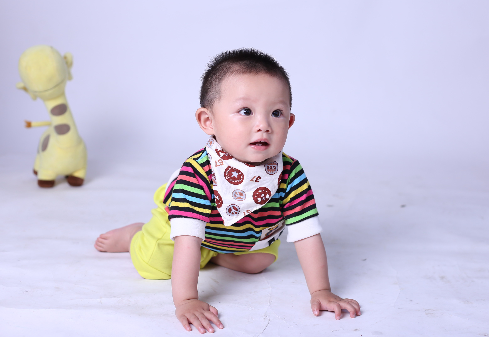

20.3 控制元素的尺寸
参考这里 。
box-sizing指定设置指定的尺寸应用到元素盒子的哪个部分，值有content-box,padding-box,border-box,margin-box。这个属性看起来很有用。
不知道是不是作者笔误，经测试boxing-sizing并没有margin-box这个属性值。
浏览器默认的元素高宽、最大最小高宽都是auto。我们可以使用尺寸，百分比覆盖它。
当为百分比时，这个值表示它的高宽是其包含块(父元素)的百分之多少。下面这张可爱宝宝图片的高度超过了它的包含块高度(如果你的浏览器不是被缩得很小的话)，连文字都被挤出去了。这个现象叫溢出。
而更有意思的是紧接着图片包含块的另一个块中的文字却覆盖在了图片上，说明溢出的部分没有占用实际空间。
<style>
.parent{
margin-left: 30px;
border: black solid 3px;
height:200px;
width:40%;
}
.sibling{
margin-left: 25px;border:1px solid red;
}
.img1{
width:100%;
}
</style>
<div class="parent">

this is a cute baby!
</div>
<div class="sibling">我在盒子外！</div>
this is a cute baby!
我在盒子外！
1.设置一定尺寸的盒子
这里主要讲的是box-sizing属性。
现在设计一个200px宽的盒子，它里面并排放两个100px宽的盒子：
<style>
.half{
width:100px;
border:1px solid green;
display: inline-block;
/*box-sizing: border-box;*/
}
.full{
width: 200px;
border:1px solid red;
padding:0;
}
</style>
<div class="full"><div class="half">a</div><div class="half">b</div></div>
上面的代码为什么没有换行：因为换行会导致出现空格，一行无法放下两个盒子。
我们发现两个盒子并没有并排，原因是他们有一个1px的边框，所以他们实际宽度是101px，所以两个盒子换行了。去掉box-sizing: border-box这段注释后，这表示宽度应该计算边框。这样盒子就在一行了。
box-sizin并没有margin-box这个值。所以如果盒子出现margin，并没有办法解决这个问题。
box-sizing默认值是content-box。
2.设置最小和最大尺寸
略过